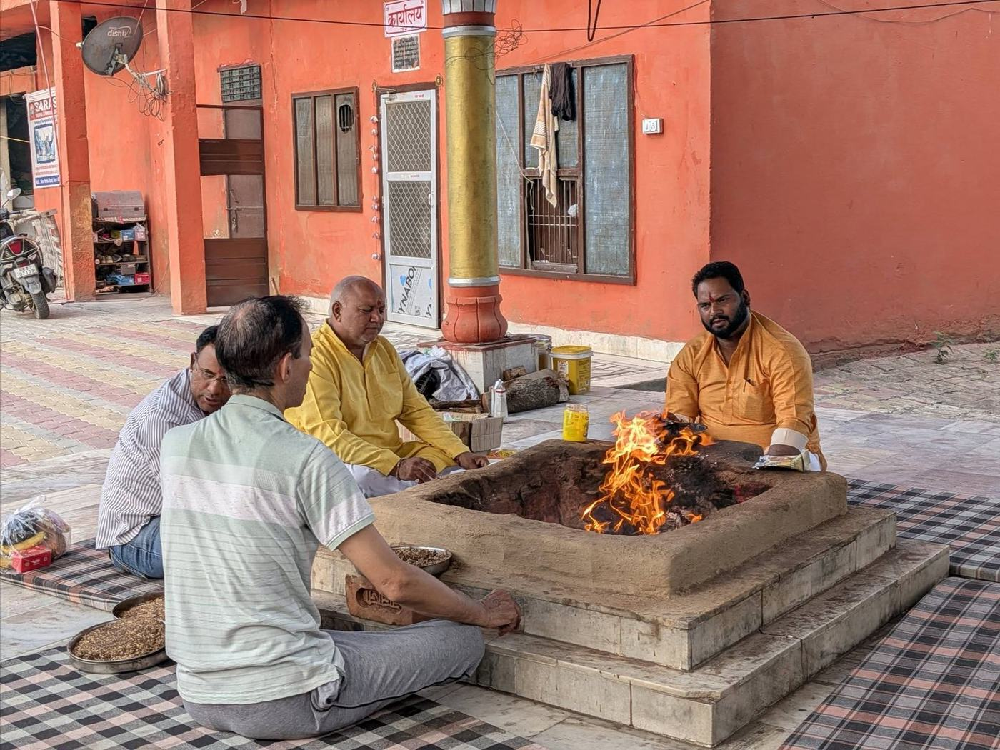
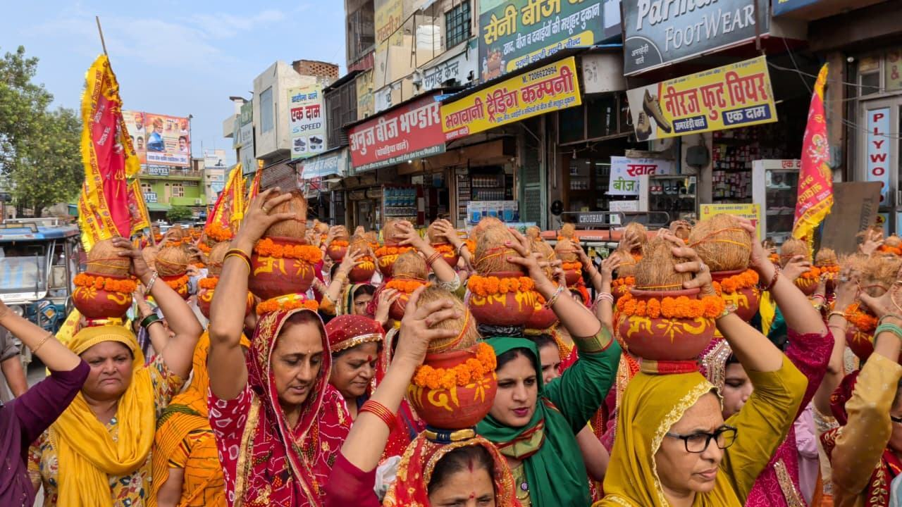
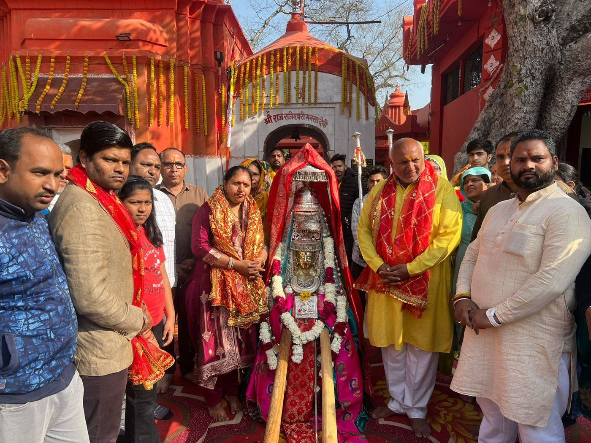

Gupt Navratri & Jayanti Mahayagya
One of the temple’s most important annual observances.
Recent celebrations have included Shat Chandi Mahayagya, Durga Saptashati recitations, mantra japa, a Kalash/Palki Yatra and a large Kanya Pujan.